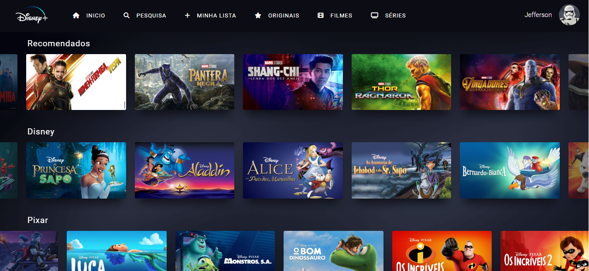
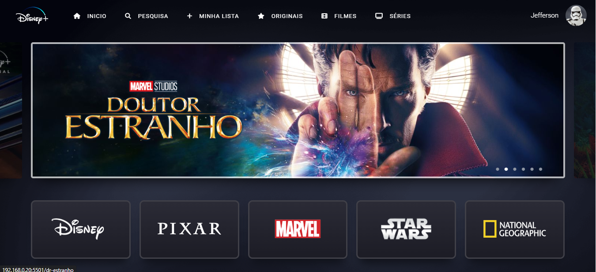

Sou um estudante de Análise e Desenvolvimento de Sistemas, tenho 25 anos e moro numa cidade chamada Macaé no Rio de Janeiro. A princípio estudando o front-end e buscando constantemente aprender e expandir meus conhecimentos na area de desenvolvimento tanto no front-end quanto no back-end, mas com um olhar amplo para o setor de TI ou para outras oportunidades que me façam crescer como pessoa e profissional. Sou uma pessoa muito tranquila, de bem com a vida. Gosto de ajudar meus companheiros(a) de trabalho quando necessário e também busco ajuda ou opinião dos meus colegas quando necessário.
-  
- HTML
- CSS
- JAVASCRIPT
- JSON
O clone da Disney Plus foi desenvolvido com ajuda do canal Hello Codes. Atráves dessa experiência aprendi muita coisa que me fez evoluir no meu aprendizado.
Foram utilizados as seguintes ferramentas: